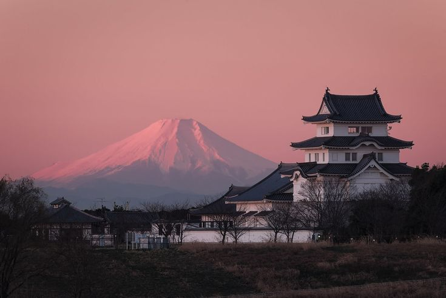
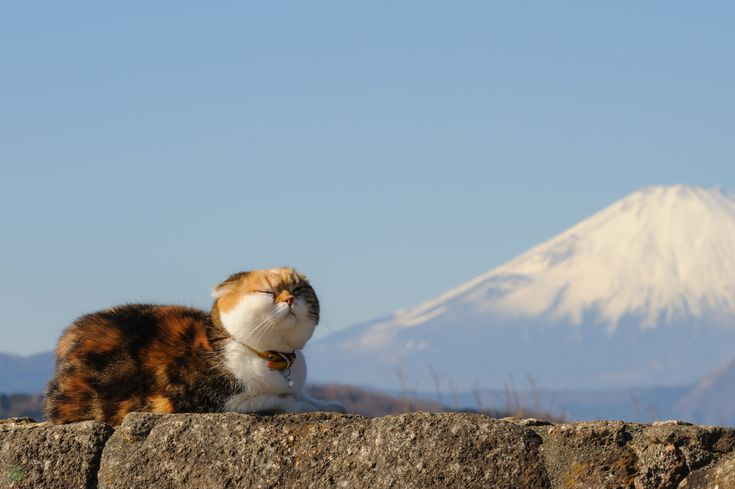
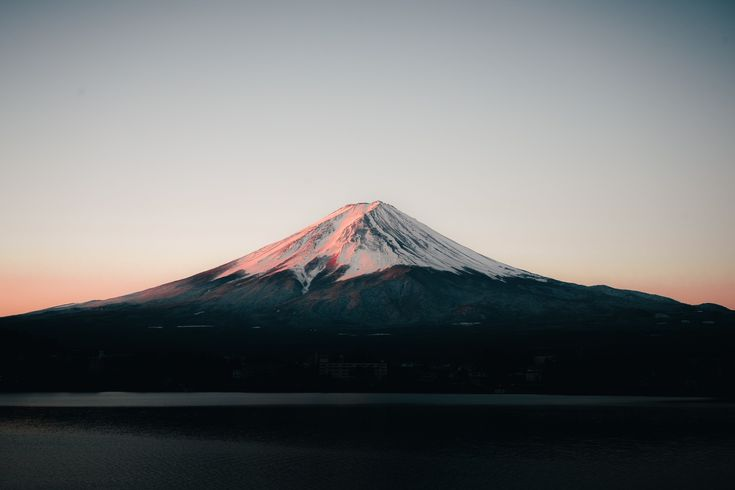
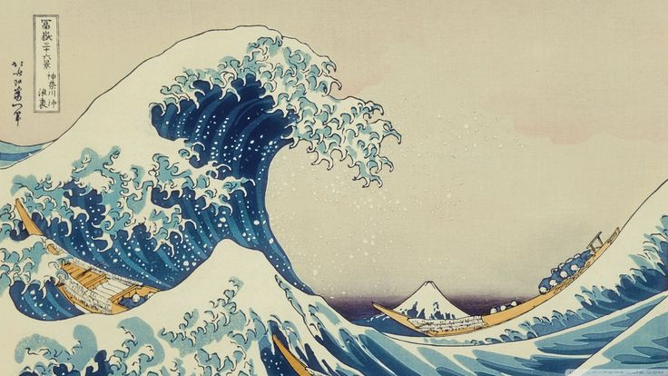
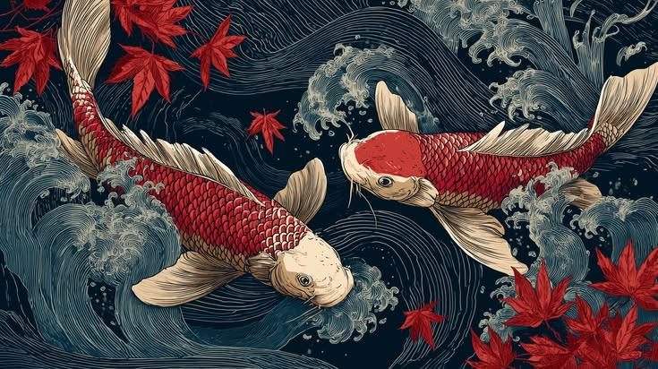

Línea de tiempo multipista
Ordená video, audio e imágenes por capas. Recortá, dividí y aplicá transiciones entre tomas.

EDICIÓN DE VIDEO PARA WINDOWS
Montá tus clips, generá subtítulos editables y trabajá el color en AtlasFX.
01 / EL EDITOR
Biblioteca, visor, línea de tiempo y ajustes del clip en una sola ventana.

PRUEBA DE COLOR
Elegí una imagen y compará cómo cambia con cada filtro. La prueba usa los mismos ajustes de los cuatro filtros rápidos de AtlasFX.




02 / HERRAMIENTAS
Organizá las tomas y ajustá los detalles de cada clip antes de exportar.
Ordená video, audio e imágenes por capas. Recortá, dividí y aplicá transiciones entre tomas.
Escribí tus subtítulos y ajustá el tiempo, la tipografía y el color.
Aplicá filtros rápidos, afiná el color o quitá un fondo de pantalla verde para combinar capas.
Separá el audio de un video, ajustá el volumen por pista y controlá los niveles con medidores.
03 / FLUJO DE TRABAJO
Los medios y proyectos se guardan localmente.
Agregá videos, audios e imágenes a la biblioteca del proyecto.
Arrastrá clips a la línea de tiempo y abrí Efectos para trabajar subtítulos y color.
Elegí resolución y calidad. AtlasFX ofrece WebM y, según la compatibilidad, MP4.